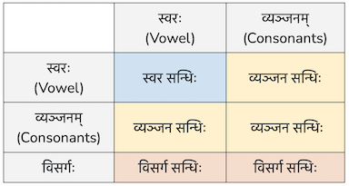
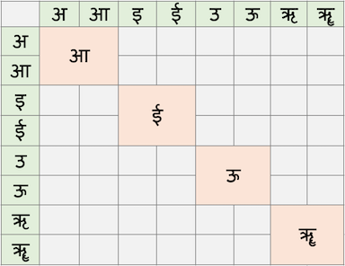

सन्धिः sandhiḥ
In speech, we take shortcuts to make it easier to speak quickly and smoothly. For example, in English you would replace "bread and butter" with "bread n butter". In Sanskrit, these shortcuts are called Sandhis. Other languages have these shortcuts too. .
A sandhi can occur within a word or between words. Sandhi changes the sounds at the junction of two letters or words to make pronunciation smoother and more natural.
Let us take an example. विद्या means knowledge and आलय means house or place. Put together, these two words mean a school. However, saying these two words together is unnatural. Try it and you will see what we mean. So sandhi kicks in to make it sound natural. How does it do that?
विद्या ends in the sound आ and आलय begins with the sound आ, so we are basically joining आ + आ. According to sandhi rules
आ + आ = आ.
So विद्या + आलय = विद्यालय
Let us take another example: कवि + इन्द्रः
Here the first word ends in इ and the second word begins with इ. According to sandhi rules, इ + इ = ई
So कवि + इन्द्रः = कवीन्द्रः
The first word is called पूर्वपदम् and the second word is called परपदम्. In Sanskrit:
पूर्वपदम् can end in a स्वर (vowel), a व्यञ्जन (consonant) or a अः (visarga).
परपदम् can begin with a स्वर or a व्यञ्जन. It cannot begin with a अः
Based on the combination of the ending sound in पूर्वपदम् and beginning sound of परपदम् sandhis are categorised into स्वरसन्धिः व्यञ्जनसन्धिः and विसर्गसन्धिः as shown in the following table:

"First look for a विसर्ग. If it is present, it is classified as a विसर्ग सन्धिः", "Then look for a व्यञ्जन. If it is present, it is classified as a व्यञ्जन सन्धिः", "Finally, if only स्वर's are present, it is classified as a स्वर सन्धिः"
| Context | Sandhi Status |
|---|---|
| Within a word | Mandatory |
| Inside compounds (समास) | Mandatory |
| Between closely related words | Mandatory (mostly) |
| Between unrelated sentences | Optional |
| In educational or analytical texts | Optional / Avoided |
| In Vedic or poetic usage | Contextual |
